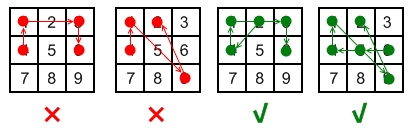

| Category | Difficulty | Likes | Dislikes |
|---|---|---|---|
| Algorithms | Medium | 208 | 238 |
dynamic-programming | backtracking | bit-manipulation | bitmask
google
Android devices have a special lock screen with a 3 x 3 grid of dots. Users can set an "unlock pattern" by connecting the dots in a specific sequence, forming a series of joined line segments where each segment's endpoints are two consecutive dots in the sequence. A sequence of k dots is a valid unlock pattern if both of the following are true:
2 and 9 without dots 5 or 6 appearing beforehand is valid because the line from dot 2 to dot 9 does not pass through the center of either dot 5 or 6.1 and 3 without dot 2 appearing beforehand is invalid because the line from dot 1 to dot 3 passes through the center of dot 2.Here are some example valid and invalid unlock patterns:

[4,1,3,6] is invalid because the line connecting dots 1 and 3 pass through dot 2, but dot 2 did not previously appear in the sequence.[4,1,9,2] is invalid because the line connecting dots 1 and 9 pass through dot 5, but dot 5 did not previously appear in the sequence.[2,4,1,3,6] is valid because it follows the conditions. The line connecting dots 1 and 3 meets the condition because dot 2 previously appeared in the sequence.[6,5,4,1,9,2] is valid because it follows the conditions. The line connecting dots 1 and 9 meets the condition because dot 5 previously appeared in the sequence.Given two integers m and n, return the number of unique and valid unlock patterns of the Android grid lock screen that consist of at least m keys and at most n keys.
Two unlock patterns are considered unique if there is a dot in one sequence that is not in the other, or the order of the dots is different.
Example 1:
Input: m = 1, n = 1
Output: 9Example 2:
Input: m = 1, n = 2
Output: 65
Constraints:
1 <= m, n <= 9